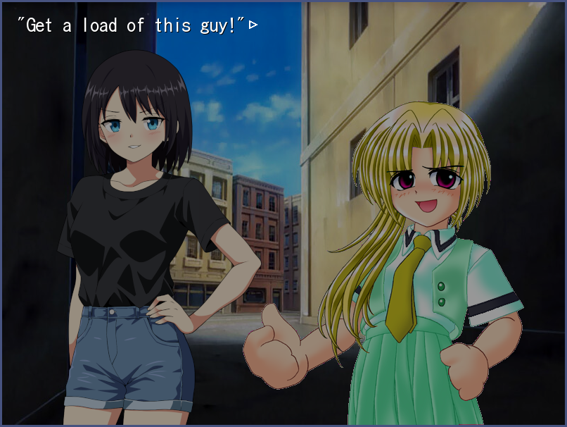

ONScripter-EN general quick-start guide: 3 - displaying sprites
We will now learn how to display character sprites. While ONScripter-EN provides several methods for drawing sprites, we will for the time being only concern ourselves with the simplest method and the most convenient for drawing character sprites - standing images. Sprites in ONScripter-EN may be BMP, JPG or PNG.
Tip
For this section we are glossing over transparency modes, which are ways of determining what part of a sprite should be transparent. The default is called "leftup" - any pixel which is the same colour as the top-left pixel of the image is counted as transparent. While an imperfect method, this should work well enough for our current purposes.
Standing images are basically three "slots" referred to as l, c, and r (for left, centre, and right) which can each have either a sprite drawn in them or be empty. There are default positions and other values for standing images; don't worry about this for now - the defaults are just fine for most purposes.
Drawing standing images
To draw standing images, we will use the ld command (short for load). It takes three arguments - the position (either l, c or r), the filename of the sprite to draw, and the effect by which to draw it. For example:
Code
ld l,sprites/character2.png,1
If you try this out now, you may notice the edges of the sprite to be just a little jagged. This is because we are dealing with transparency now - different transparency modes are a topic for a later article.
Like before, the filename can be represented by an alias to make it easier for us. Using the alias already provided in the template project, the line above could also be written like this:
Code
ld l,sp_girl2,1
Tip
Since standing images are "slots" which can either be empty or hold a single sprite at a time, if you try and draw a sprite to a slot already containing a sprite, the old one will be replaced by the new one. This saves you from having to clear the slot each time you want to draw to it.
Clearing standing images
The cl command is used to clear standing images. It takes two arguments - the slot and the effect, as before. This time, a can also be provided as a slot, which will cause all slots to be cleared. For example, this will immediately clear all standing images:
Code
cl a,1
Putting it all together
We have now covered the basic visual elements of a novel game. Putting together what we have learned so far, using the following code in the template project will produce the subsequent result:
Code
bg bg_alley,1
ld l,sp_girl2,1
ld r,sp_miontoko,1
`"Get a load of this guy!"@
Image
